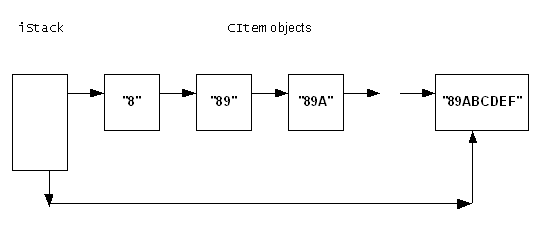

|
| |
The following code fragments show how a singly linked list can be
constructed and manipulated. The list consists of instances of an example
class, CItem, which form items on a stack implemented as a singly
linked list using the iSlink data member as the link object. In
this example, a CItem object can contain an item of text
implemented as an HBufC.
The class is declared as:
class CItem : public CBase
{
public :
static CItem* NewL(const TDesC& aText);
static CItem* NewLC(const TDesC& aText);
CItem();
virtual ~CItem();
const HBufC* GetText();
public :
static const TInt iOffset;
private :
void ConstructL(const TDesC& aText);
private :
TSglQueLink iSlink;
HBufC* iText;
friend class CStack;
};
The CItem member functions are implemented as:
const TInt CItem::iOffset = _FOFF(CItem,iSlink);
CItem* CItem::NewLC(const TDesC& aText)
{
CItem* self = new (ELeave) CItem();
CleanupStack::PushL(self);
self->ConstructL(aText);
return self;
}
CItem* CItem::NewL(const TDesC& aText)
{
CItem* self = CItem::NewLC(aText);
CleanupStack::Pop();
return self;
}
void CItem::ConstructL(const TDesC& aText)
{
iText = aText.AllocL();
}
CItem::CItem()
{}
CItem::~CItem()
{
delete iText;
}
const HBufC* CItem::GetText()
{
return (iText);
}
As part of the construction process, a CItem constructs
an HBufC of the correct length and copies the content of the
descriptor parameter into it.
The stack is implemented by an instance of the example class
CStack. This maintains the stack by adding CItem
objects onto the end of the list and removing them from the end of the list.
When removing them from the end of the list, a pointer to the removed
CItem object is returned.
In this example, the list header, iStack, and the
iterator, iStackIter, are declared as data members of the class
and are constructed when the CStack object is constructed. A C++
constructor must be supplied so that iStackIter can be
constructed. (TSglQueIter has no default constructor).
AddToStack() takes a CItem object and adds
it to the end of the singly linked list.
RemoveFromStack() takes the CItem object at
the end of the singly linked list, removes it from the list and returns a
pointer to it.
The CStack class is declared as:
class CStack : public CBase
{
public :
static CStack* NewL();
static CStack* NewLC();
CStack();
void Construct();
virtual ~CStack();
CItem* RemoveFromStack();
void AddToStack(CItem& anItem);
private :
TSglQue<CItem> iStack;
TSglQueIter<CItem> iStackIter;
};
The CStack member functions are implemented as:
CStack* CStack::NewLC()
{
CStack* self = CStack::NewL();
CleanupStack::PushL(self);
return self;
}
CStack* CStack::NewL()
{
CStack* self = new (ELeave) CStack;
return self;
}
CStack::CStack()
: iStack(CItem::iOffset),iStackIter(iStack)
{}
The C++ constructor is needed so that the list header
(iStack) and the list iterator (iStackIter) can be
properly constructed.
Before destroying a CStack object, the list is
destroyed. This is achieved using the iterator (iStackIter). The
iterator pointer is set to point to each element in turn, removing that element
from the list before destroying it.
Once the iterator has reached the end of the list, the
operator++ returns NULL.
The destruction process is safe if the list is empty; the statement
iStackIter.SetToFirst() is harmless, the operator++
returns NULL and execution of the body of the while
loop never happens.
CStack::~CStack()
{
CItem* item;
iStackIter.SetToFirst();
while ((item = iStackIter++) != NULL)
{
iStack.Remove(*item);
delete item;
};
}
|
Adding an element to the stack simply involves adding the
CItem object to the end of the list.
void CStack::AddToStack(CItem& anItem)
{
iStack.AddLast(anItem);
}
|
The RemoveFromStack() function returns
NULL, if the list is empty, otherwise it just uses the
Last() member function to return a pointer to the last element in
the list before removing it.
CItem* CStack::RemoveFromStack()
{
CItem* lastitem;
if (iStack.IsEmpty())
return NULL;
lastitem = iStack.Last();
iStack.Remove(*lastitem);
return (lastitem);
}
|
Executing the code results in a singly linked list of
CItem objects each containing a pointer to an HBufC
descriptor each of which, in turn, contains the text “8”,
“89”, and so on through to “89ABCDEF”:
{
CStack* stack;
CItem* item;
TBuf<16> buffer;
TRAPD(leavecode,stack = CStack::NewL());
if (leavecode != KErrNone)
{
// Cannot create stack
return;
}
for (TUint jj = 8; jj < 16; jj++)
{
buffer.AppendNumUC(jj,EHex);
TRAPD(leavecode,item = CItem::NewL(buffer));
if (leavecode != KErrNone)
{
// Cannot create item
delete stack;
return;
}
stack->AddToStack(*item);
}
as the following shows:

|
The following code removes each CItem element from the
list, starting with the last and working through to the first until the list is
empty.
while ((item = stack->RemoveFromStack()) != NULL)
{
// item->GetText());can be used to access the text.
delete item;
};
delete stack;
Note that unlike doubly linked lists, elements can only be added to the start or the end of a singly linked list. Elements cannot be added to the middle of the list.
Copyright ©2002 Symbian Ltd. 6.1-00174 |
|